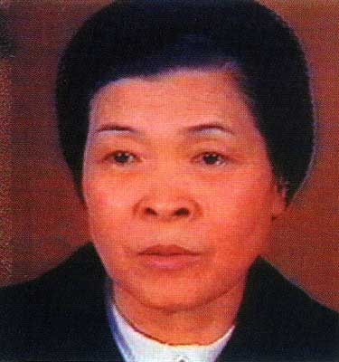
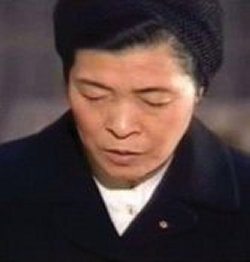
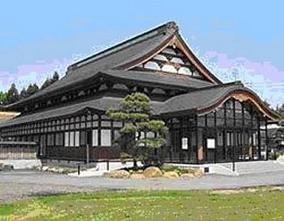
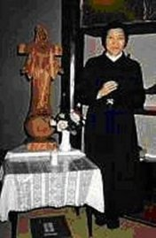
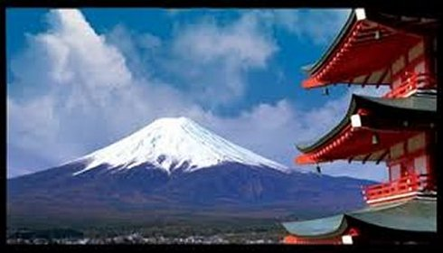
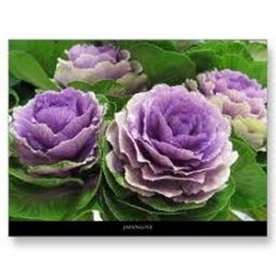
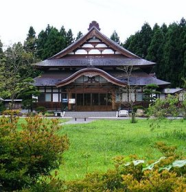
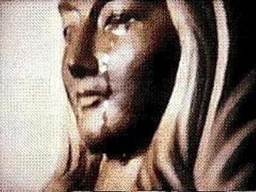

ESCOLHIDA PELO SENHOR
IRMÃ INÊS KATSUKO SASAGAWA
Nasceu
prematuramente e sempre foi uma jovem de constituição frágil, mas graças aos
cuidados e afeto que a família sempre lhe dedicou, 
Aos 19 anos de idade, sofreu a primeira grande provação de sua vida, sendo atacada por uma paralisia do sistema nervoso central, em consequência de uma desastrosa operação de apendicite. Ficou paralítica durante dezesseis anos, lutando incansavelmente contra o seu problema, sendo transferida com frequência, de Hospital para Hospital, sujeita a operações sucessivas, até que na Clínica Myôkô, conheceu e criou amizade com uma enfermeira católica, que a catequizou instruindo-a nas verdades cristãs. Graças aos cuidados da enfermeira, o estado da doente foi melhorando aos poucos. E foi sob a orientação dela, que a jovem Inês deu os primeiros passos na fé cristã e foi batizada.
Conhecendo JESUS e NOSSA SENHORA pela Sagrada Escritura, sentiu nascer no fundo de seu coração um ardente e fervoroso amor a DEUS, que lhe estimulou a se dedicar ao serviço do SENHOR e ao próximo.
Depois de carinhosamente ter vencido a resistência da família, que a principio não concordava, foi admitida na Ordem Religiosa das Irmãs de NOSSA SENHORA DE JUNSHIN, na cidade de Nagasaki, que sabendo dos seus problemas, logo a cercaram de todos os cuidados que seu frágil estado físico necessitava. Apesar de toda atenção recebida, teve uma séria recaída quatro meses depois de sua chegada e teve que ser transportada para a Clínica Myôkô, onde permaneceu dez (10) dias em coma e, seu estado foi considerado desesperador. Com agilidade as Irmãs deram-lhe para beber água trazida da Gruta de Lourdes, na França, enviada pelas Irmãs de Nagasaki. No primeiro gole, a água benzida por NOSSA SENHORA recuperou os seus sentidos e deu mobilidade aos membros entorpecidos.
Assim que foi liberada pela Clínica, teve que se submeter a um longo período de recuperação dos seus membros, e naturalmente, estava ansiosa para voltar ao convívio com as Irmãs no Convento de NOSSA SENHORA DE JUNSHIN, mas o Pároco Takada lhe manifestou um grande desejo de lhe confiar à guarda da Igreja de Myôkô, que acabava de ser reconstruída. Ela agradeceu e aceitou, pois sentiu que também era uma maneira concreta de servir a DEUS.
No ano de 1969, teve noticias da existência do Instituto das Servas da Eucaristia, no qual o Estatuto permitia aos seus membros, levar uma vida consagrada permanecendo no meio da sociedade. Ingressou no Instituto, a conselho do Bispo Dom Ito, que foi o fundador do referido Instituto, permitindo-lhe que continuasse com a guarda da Igreja de Myôkô, onde também era catequista.
Em fins de Janeiro de 1973, a Irmã Inês começou a sentir uma acentuada regressão da audição dos dois ouvidos, mas estando muito absorvida pelo trabalho na Igreja, não se preocupou. Contudo na manhã do dia 16 de Março, ao responder uma ligação telefônica da Casa-Mãe do Instituto ao qual se filiará, com tristeza percebeu que havia perdido totalmente a audição. Foi encaminhada ao Hospital Rosai de Niigata para tratamento. O Dr. Sawada depois dos exames, revelou que os ouvidos não apresentavam fisicamente nenhuma anomalia e que a causa exata da surdez era desconhecida. Tratava-se de uma surdez total do ouvido direito e esquerdo. Foi submetida a um longo tratamento, e por isso mesmo, estava impossibilitada de assumir qualquer responsabilidade, pelo fato de estar com a audição prejudicada. Por outro lado, o médico agilizou providências para que ela pudesse receber do Governo uma pensão, pela invalidez física.
Diante do que aconteceu a Irmã Inês, hoje imaginamos que DEUS, misericórdia infinita, mergulhou o seu instrumento humano no mundo do silêncio, como numa preparação, para no tempo certo, divulgar ao mundo a Sua Divina Mensagem. Então, acompanhando a sequência dos fatos, a missão da Irmã Inês começou neste dia em que ficou totalmente surda e muda.
Na Bíblia também encontramos exemplos semelhantes, como por exemplo, o nascimento de João Batista, que recebeu o seu nome depois da provação de seu pai Zacarias que ficou surdo-mudo por um determinado tempo, por ter duvidado das palavras do Anjo Mensageiro Divino. Na verdade, por caminhos desconcertantes o SENHOR DEUS realiza os seus insondáveis desígnios.

Enquanto a sua família se esforçava em mantê-la no lar, Irmã Inês recebeu uma carta das Servas da Eucaristia, propondo-lhe ir viver na Colina, ou seja, na Casa Mãe da Instituição. Essa também era a opinião do senhor Bispo Dom Ito, que lhe manifestou em diversas oportunidades, quando lhe escrevia, ou quando a visitava pessoalmente.
Irmã Inês chegou ao Convento do Instituto das Servas da Eucaristia, no dia 12 de Maio de 1973, acompanhada de sua irmã e da cunhada.
Foi recebida com carinho e alegria pelas seis religiosas que viviam na Comunidade, como um novo membro da família, a qual, ela realmente já pertencia. E também, o Sacerdote que dava assistência a Comunidade, estava presente e com júbilo apresentou-lhe as boas vindas. Todavia, poucos dias após, o Padre Capelão teve que deixar a Comunidade, porque foi transferido para outro local. As Irmãs ficaram tristes, sobretudo porque deixaram de ter a Santa Missa todos os dias, que era celebrada com muita espiritualidade na Capela do Convento. Assim, aos Domingos e Feriados Santificados, agora, as Irmãs tinham que descer a colina para participar da Santa Missa na cidade.





